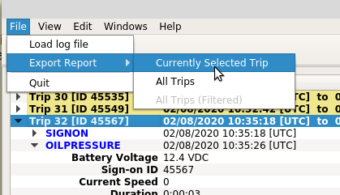

The application allows exporting of trip events for the currently selected trip or all trips in the log file. The export options are available from the application menu if a log file is loaded. Once selected, a file selection dialog is presented allowing the user to select the file to export to.
Exporting is in plain text and mostly reflects the data presented on the Trip Data and Trip Summary panes; trip speed data is not exported other than as part of event information.
If exporting data for all trips is selected, all trips are exported to a single file.
For each trip the export consists of a header that includes the trip time, contoller ID, and sign-on ID, followed by a summary table of events in the trip, and then followed by each of the events in the trip. Note that all events are included in the export regardless of whether or not they are currently shown in the Trip Data pane.